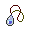

中局
剧情流程
- １１４号道路
- 离开秋叶镇，前往１１４号道路。
- 与上方屋子里的小男孩对话获得招式学习器２８（挖洞）。
- 在真由美家中与之交谈可获得莲叶童子布偶。
- 通过１１４号道路进入流星瀑布。
- 流星瀑布
- 熔岩队手下与海洋队手下在此偷走了索蓝斯博士的
 陨石。
陨石。 - 离开洞窟后通过１１５号道路回到卡那兹市。
- 熔岩队手下与海洋队手下在此偷走了索蓝斯博士的
- 烟囱山
- 从卡那兹市经卡绿隧道返回紫堇市。
- 再次来到１１２号道路，原本挡在缆车入口的熔岩队手下已经离开。
- 搭乘缆车后继续往山顶方向行走，途中与数名熔岩队手下展开战斗。
- 在火山口发现熔岩队老大赤焰松，交谈并击败他后便会与其他熔岩队手下离开。
- 海洋队老大水梧桐前来致谢，一旁的机器可以拾取陨石。
- 釜炎镇
- 从缆车车站往下走，经凹凸山道来到釜炎镇。
- 和温泉区的老婆婆说话，取得宝可梦的蛋，可以孵出
 小果然。
小果然。 - 和中药店里的老人说话获得木炭。
- 进入釜炎道馆，和道馆馆主亚莎进行对战。（获胜后可以获得烈焰徽章和招式学习器５０（过热）。）
- 从道馆出来后会遇到劲敌，并赠予ＧＯＧＯ护目镜。
- 沙漠
- 离开釜炎镇向右行走回到１１２号道路，并前往１１１号道路中部的沙漠。
- 在幻影之塔内部可以发现爪子化石与根状化石，两者择一后地面塌陷致使其消失。
- 将化石携带至得文公司可复活
![太古羽虫]() 太古羽虫或
太古羽虫或![触手百合]() 触手百合。
触手百合。
- 秋叶镇
- 将陨石交还南边屋内的索蓝斯博士可获得招式学习器２７（报恩）。
- 橙华市
- 进入橙华道馆和道馆馆主千里进行对战。（获胜后可以获得天秤徽章和招式学习器４２（硬撑）。）
- 满充的爸爸出现将主角带回家，并赠予玩家秘传学习器０３（冲浪）。
- 未白镇
- 回到主角居住的家中与妈妈对话可得到
 护符金币。
护符金币。
- 回到主角居住的家中与妈妈对话可得到
- 紫堇市
- 再次来到紫堇市会发现道馆馆主铁旋在市中心等待，交谈后获得地下钥匙。
- 前往位于１１０号道路的新紫堇，使用钥匙进入后到深处按下红色按钮。
- 返回紫堇市找铁旋即可获得招式学习器２４（十万伏特）。
- １１８号道路
- 向右行进至１１８号道路，渡水后与海滩的垂钓者对话获得
 好钓竿。
好钓竿。 - 上岸后遇到大吾，但不会发生事件。
- 向右行进至１１８号道路，渡水后与海滩的垂钓者对话获得
- １１９号道路
- 由１１８号道路向上转入１１９号道路，走到天气研究所时会发现前面的桥被海洋队手下挡住。
- 进入天气研究所内击败海洋队手下后，博士将赠与
 飘浮泡泡（持有
飘浮泡泡（持有
神秘水滴）。 - 离开天气研究所过桥后遇上劲敌，对话后进入第四次战斗。，胜利后获赠秘传学习器０２（飞翔）。
- 茵郁市
- 和上方由左数来第二间房子里的老婆婆玩猜谜（顺序为右、右、左），答对三次可得到招式学习器１０（觉醒力量）。
- 由于道馆被不知名的物体阻挡去路，因此继续向右来到１２０号道路。
- 过桥后会看到大吾，交谈后发现原来是
![变隐龙]() 变隐龙，随即进入战斗。
变隐龙，随即进入战斗。 - 战斗结束后大吾便赠送玩家得文侦测镜。
- 回到茵郁市，使用得文侦测镜排除挡住通道的变隐龙。
- 进入茵郁道馆与道馆馆主娜琪进行对战。（获胜后可以获得白羽徽章和招式学习器４０（燕返）。）
- １２０号道路
- 第一座桥下的山洞里可拾取招式学习器１１（大晴天）。
- 行至尽头右转通向１２１号道路。
- １２１号道路
- 持有宝可方块盒之后才能进入狩猎地带。
- 通过１２１号道路来到水静市。
- 水静市
- 劲敌出现在水静百货门口，与之对话进入第五次战斗。
- 在华丽大赛会场内与柜台小姐对话获得宝可方块盒。
- 海崖上的小屋里住著一名男子，会赠予玩家招式学习器４４（睡觉）。
- １２２号水路
- 经由１２１号道路绕行至１２２号水路，进入地图中央的送神山。
- 由外部登上山顶，途中与多名海洋队手下展开战斗。
- 海洋队老大水梧桐离开后从老婆婆手中取得熔岩标志。
- 凹凸山道
- 陨石事件后，原先驻足在此的熔岩队手下已经消失。
- 玩家一旦靠近半山腰处，岩壁将会自动出现熔岩队基地的入口。
- 抵达最深处发现熔岩队老大赤焰松正以
 靛蓝色宝珠唤醒固拉多。
靛蓝色宝珠唤醒固拉多。 - 固拉多苏醒后立刻消失，随即与赤焰松展开对战。
- 凯那市
- 再次来到凯那市，发现库斯诺吉馆长正在港口召开记者会。
- 此时海洋队忽然出现抢走潜水艇。
- 离开凯那市后迅速返回水静市。
- 水静市
- 前往右上方的海洋队基地，抵达深处却仍然被潜水艇逃走了。
- １２４号水路
- 离开海洋队基地继续向右行经１２４号水路前往绿岭市。
- 于水下搜集各色碎片后可于寻宝者的小屋兑换为进化之石。
原文：神奇宝贝百科《附录:寶可夢 綠寶石流程》（修订版本 2617260，2026-09-03），作者见原文页面历史。本页由 Eli 的杂货间转载，并有改动（重新排版、去掉站内链接）。原文与本页均以 CC BY-NC-SA 3.0 授权。配图来自原站，版权归原作者与游戏厂商。